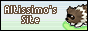

I have data dumps and prose about things I find interesting regarding Pokémon games.
I also compile links to resources elsewhere that I find useful. Here are some generalized resources. More specific resources are linked on more specific pages.
This site recently got a shout-out in a Chuggaaconroy video for having a lot of Battle Frontier information. Because of that shout-out, I've decided to put up Pokémon data for the facilities I haven't yet covered (Battle Subway, Battle Tree, and Sw/Sh Battle Tower) even though I haven't gotten to covering those games yet.
Sources for other battle facilities (Crystal Tower, Ruby/Sapphire Tower, Emerald Frontier & Trainer Hill, FireRed/LeafGreen Trainer Tower, Diamond/Pearl Battle Tower, Platinum/HeartGold/SoulSilver Frontier, X/Y/Omega Ruby/Alpha Sapphire Maison, and Brilliant Diamond/Shining Pearl Tower) can be found linked on the pages below.
Pokémon Champions was released on 8 April for the Nintendo Switch and Nintendo Switch 2. Because this game has little in the way of single-player content, and because a lot of the data that I would want to cover (such as information about rental Pokémon generation) is handled on the server and thus cannot be datamined, I probably won't cover this game unless some future update adds single-player content.
On 17 March, XD: Gale of Darkness was re-released for the Nintendo Switch 2, via the Nintendo Classics - GameCube application. This version of the game cannot communicate with any other Pokémon games, unlike the original.
If there is an XD resource you want to see referenced or want to see me make, or if you find any problems with my existing information, please let me know or consider submitting a PR or starting an Issue on GitHub.
last updated 21 April 2026
Main Series: "Core" series games. Currently contains pages for the following games:
Supplementary Series: A term I made up to describe games that don't have the exact same gameplay loop as core games, but can trade and interact with them. Currently contains pages for the following games:
Side Series: Other Pokémon games with altogether different mechanics. Currently contains pages for the following games:
Quick links to indexes containing lists of locations in the games. These can also be accessed via the links above.